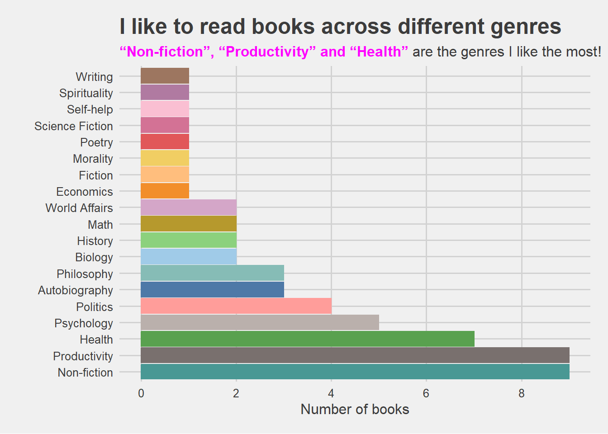

Amit’s Reading List
A lifetime is not enough to read all the books I want to read!
As a child I liked reading books but then over the years I lost the habit. Then a friend gifted me a book on my birthday and it helped me rediscover reading. There were two other factors that helped me get back to reading:
The Covid lockdowns of 2020 provided a little more time at hand. I could give time and energy to things I really wanted to do.
One good habit begets another, so as I started focussing more on physical fitness it had other positive side effects. I thought what else could I accomplish that I never thought possible, getting back to reading was a long standing desire.
To track the effectiveness of my reading habit, I define a metric that I like to call reading backlog. The reading backlog is defined as follows:
\[ \frac{number\:of\:books\:to\:read}{number\:of\:books\:excluding\:the\:ones\:I\:would\:probably\:never\:read} \]
The lower the reading backlog value the better. As of 2022-11-09, the reading backlog stands at a reasonably ok value of 0.44. The number of books on my bookshelf that I still plan to read is 18.
Here is a graphic showing what genres I like to read. Productiviy and health stand out.

| Amit's book list | |||||
| 50 books, 16 genres, 8 years | |||||
| Book | Author | Genre | Year | Reading Status | Notes |
|---|---|---|---|---|---|
| The Precipice | Toby Ord | Philosophy | 2022 | Currently Reading | - |
| The 4-hour work week | Tim Ferris | Self-help | 2022 | Yet to start | Curious if I can reduce even my day to a 4-hour work day 😊 |
| Stolen Focus | Johann Hari | Productivity | 2022 | Finished | One of the most important books you can read |
| The Elements of Style | William Strunk Jr. and E.B. White | Writing | 2022 | Yet to start | - |
| Mathematics for Machine Learning | Deisenroth, Faisal and Ong | Math | 2022 | Currently Reading | - |
| How to Argue with a Racist | Adam Rutherford | Non-fiction | 2022 | Started but on hold | - |
| Superhuman | Rowan Hooper | Productivity | 2022 | Finished | - |
| The ONE Thing: The Surprisingly Simple Truth About Extraordinary Results | Gary Keller, Jay Papasan | Productivity | 2022 | Finished | Very Highly Recommend |
| Behave | Robert Sapolsky | Biology | 2022 | Started but could not finish | Great book but just too dense (easier to watch videos of the author on YouTube) |
| Linear Algebra and Optimization for Machine Learning | Charu C Aggarwal | Math | 2022 | Yet to start | - |
| Dopamine Nation | Anna Lembke | Health | 2022 | Finished | Highly recommend |
| The Art of Impossible | Steven Kotler | Productivity | 2022 | Finished | - |
| Never Give Up: My Life in the Wild | Bear Grylls | Autobiography | 2022 | Read intermittently | - |
| Noise: A Flaw in Human Judgment | Cass R. Sunstein, Daniel Kahneman, and Olivier Sibony | Psychology | 2022 | On the bookshelf, but probably not gonna read | - |
| Breathing for Warriors | Belisa Vranich | Health | 2021 | Finished | - |
| Code Breaker | Walter Issacson | Non-fiction | 2021 | Partially Read | - |
| Deep Work | Cal Newport | Productivity | 2021 | Finished | - |
| The Biology of Belief | Bruce H Lipton | Biology | 2021 | Partially Read | - |
| Eat Like the Animals | David Raubenheimer, Stephen J Simpson | Health | 2021 | Finished | Highly Recommend |
| Can't Hurt Me | David Goggins | Autobiography | 2021 | Finished | Highly Recommend |
| Finding Ultra | Rich Roll | Autobiography | 2021 | Finished | Highly Recommend |
| Outliers | Malcom Gladwell | Psychology | 2021 | Finished | Highly Recommend |
| Why We Sleep | Matthew Walker | Health | 2021 | Finished | Very Highly Recommend |
| Man's Search for Meaning | Viktor E. Frankl | Psychology | 2021 | Finished | Very Highly Recommend |
| Stillness is the key | Ryan Holiday | Philosophy | 2021 | Finished | Very Highly Recommend |
| The pleasure of finding things out | Richard Feynman | Non-fiction | 2021 | Yet to start | - |
| Anatomy of Exercise | Mannocchia | Health | 2021 | On the bookshelf, but probably not gonna read | - |
| Thinking Fast and Slow | Daniel Kahneman | Psychology | 2021 | Read intermittently | Highly Recommend |
| Rashmirathi (Hindi) | Ramdhari Sigh Dinkar | Poetry | 2021 | Finished | Very Highly Recommend |
| Natural Born Heroes | Christopher McDougall | Psychology | 2021 | Read intermittently | - |
| The Infinite Game | Simon Sinek | Productivity | 2020 | Finished | - |
| Atomic Habits | James Clear | Productivity | 2020 | Finished | Very Highly Recommend |
| Think Again | Adam Grant | Productivity | 2020 | Finished | - |
| The Circadian Code | Satchin Panda | Health | 2020 | Finished | - |
| How Fascism Works | Jason Stanley | Politics | 2020 | Partially Read | - |
| Ghosting the News | Margaret Sullivan | Politics | 2020 | Partially Read | - |
| Twilight of Democracy | Anne Applebaum | Politics | 2020 | Partially Read | - |
| The Death of Expertise | Tom Nichols | Non-fiction | 2020 | Finished | Highly Recommend |
| Breath | James Nestor | Health | 2020 | Finished | Very Highly Recommend |
| Architects of Intelligence: The truth about AI from the people who invented it | Martin Ford | Non-fiction | 2020 | On the bookshelf, but probably not gonna read | - |
| The coddling of the American mind | Greg Lukianoff and Jonathan Haidt | Non-fiction | 2019 | Partially Read | - |
| Fire and Fury | Michael Wolf | Politics | 2019 | On the bookshelf, but probably not gonna read | - |
| The Seige | Adrian Levy and Cathy Scott-Clark | Non-fiction | 2016 | On the bookshelf, but probably not gonna read | - |
| The Shadow of the Great Game | Narinder Singh Sarila | History | 2015 | On the bookshelf, but probably not gonna read | - |
| The Great Partition | Yasmin Khan | History | 2015 | On the bookshelf, but probably not gonna read | - |
| An Uncertain Glory: India and its contradictions | Dreze & Sen | Economics | 2015 | On the bookshelf, but probably not gonna read | - |
| The Wrong Enemy | Carlotta Gall | World Affairs | 2014 | Partially Read | - |
| America in Retreat | Bret Stephens | World Affairs | 2014 | Partially Read | - |
| Fighting till the end: The Pakistan Army's Way of War | C. Christine Fair | Non-fiction | 2014 | Finished | - |
| The Autobiography of a Yogi | Paramhans Yoganand | Spirituality | 2014 | Finished | The only book that I have read more than once, cover to cover. |
This website was created using Quarto and GitHub actions, please see https://github.com/aarora79/my-reading-list.